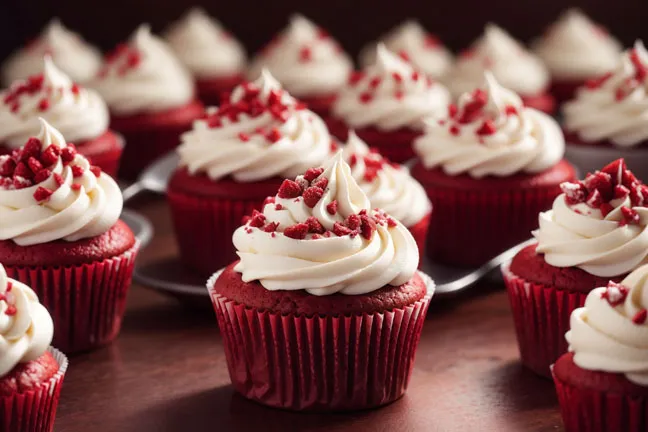

Red Velvet Cupcakes

Description
These are succulent, delicious, tasty red velvet cupcakes that are really good. I used all
the nice food words I know, and in all honesty I've never made these, but they seem good.
Ingredients
- 2 large eggs, room temp and separated
- 1 and 1/3 cups all-purpose flour
- 1/4 cup cornstarch
- 1/2 teaspoon baking soda
- 4 teaspoons unsweetened cocoa powder
- 1/4 teaspoon salt
- 1/4 cup unsalted butter, softened to room temp
- 1 cup granulated sugar
- 1/2 cup canola oil or veg oil
- 2 teaspoons pure vanilla extract
- Red food coloring
- 1/2 cup buttermilk, room temp
- Cream cheese frosting
Instructions
- Preheat oven to 350°F (177°C). Line a 12-cup muffin pan with cupcake liners. This recipe makes 14 cupcakes, so you will have 2 cupcakes to bake in a 2nd batch.
- With a handheld or stand mixer fitted with a whisk attachment, beat 2 egg whites on high speed in a medium bowl until soft peaks form, about 2-3 minutes. See photo at the bottom of this yellow cupcakes with milk chocolate frosting post for a visual. Set aside.
- Sift the flour and cornstarch together to make sure it is evenly combined. Whisk this, along with baking soda, cocoa powder, and salt together in a medium bowl. Set aside.
- Using a handheld or stand mixer fitted with a paddle attachment, beat the butter on high speed until smooth and creamy—about 1 minute. Add the sugar and beat on high speed for 2 minutes until creamed together fairly well. Scrape down the sides and up the bottom of the bowl with a silicone spatula as needed. Add the oil and beat on high for 2 minutes. The butter may look “piece-y” and not completely combine with the oil. This is normal and ok.
- Add 2 egg yolks and the vanilla. Beat on medium-high speed until combined. Scrape down the sides and up the bottom of the bowl with a rubber spatula as needed. Beat in the vinegar and the food coloring, until you reach your desired color. I use 2 Tablespoons. With the mixer on low speed, add the dry ingredients in three additions alternating with the buttermilk, beginning and ending with the dry ingredients, and mixing each addition just until incorporated. Do not overmix. Fold whipped egg whites into cupcake batter with a rubber spatula or wooden spoon. The batter will be silky and slightly thick. (If there are still pieces of butter—and there were in 1 test batch for me—again, this is ok. They will melt inside as the cupcakes bake, making them even more buttery.)
- Spoon batter into cupcake liners filling 1/2 – 2/3 of the way full. Bake for 20-21 minutes or until the tops of the cupcakes spring back when gently touched and a toothpick inserted in the center comes out clean. Don’t overbake; your cupcakes will dry out. Allow to cool in the pan for 5 minutes, then transfer to a rack to cool completely.
- Prepare cream cheese frosting. Frost cooled cupcakes immediately before serving. I used a Wilton #12 tip; I don’t recommend a star tip. This frosting is a little too thin.